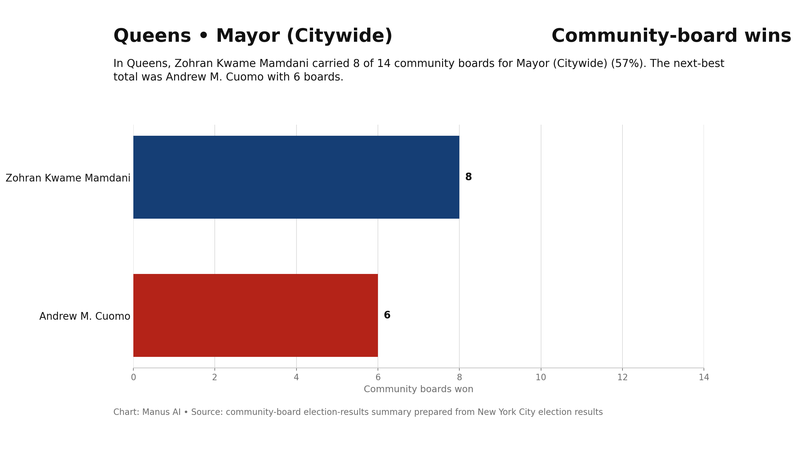
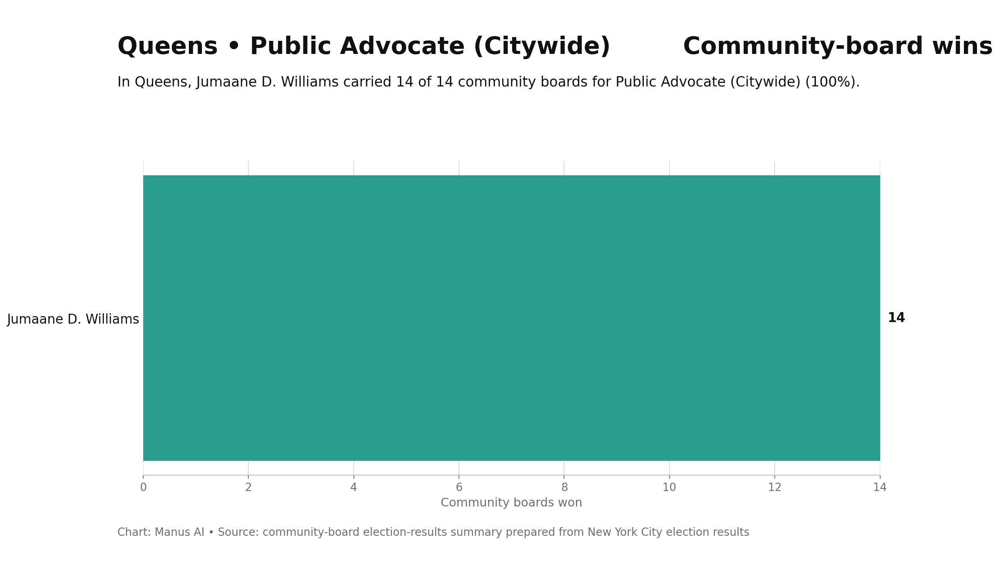
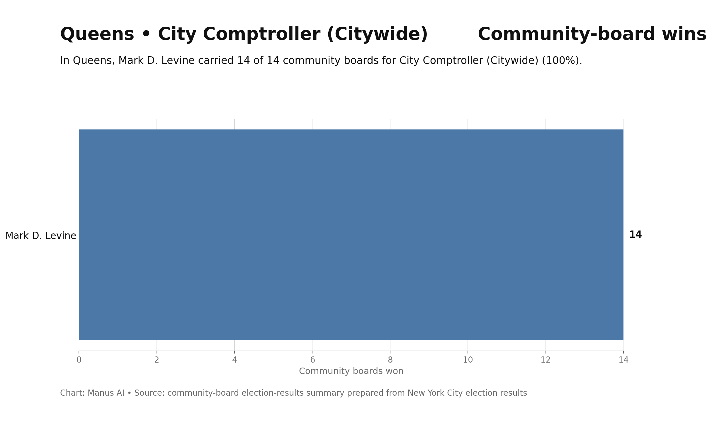
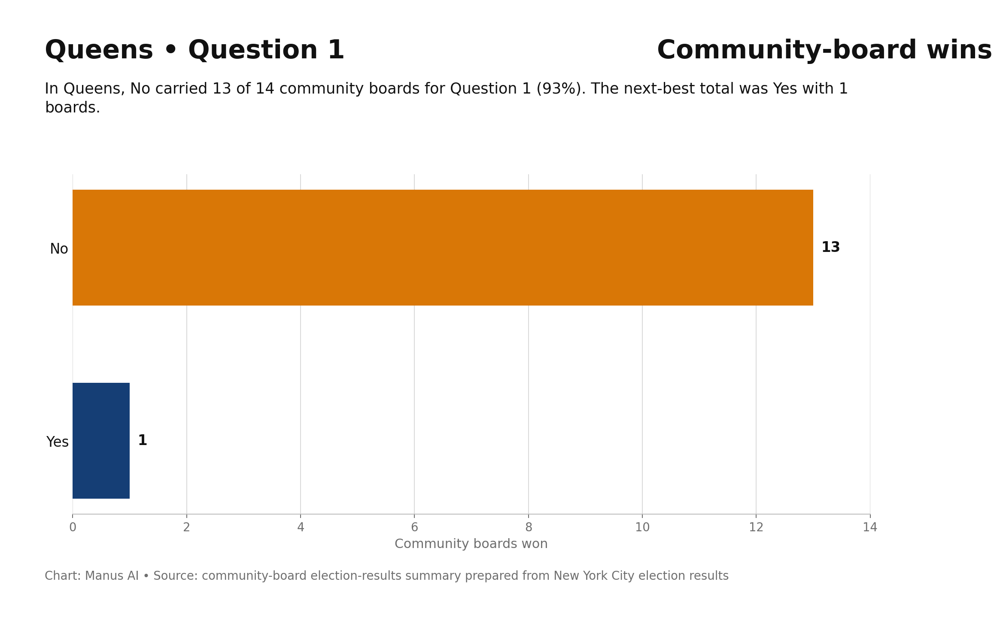
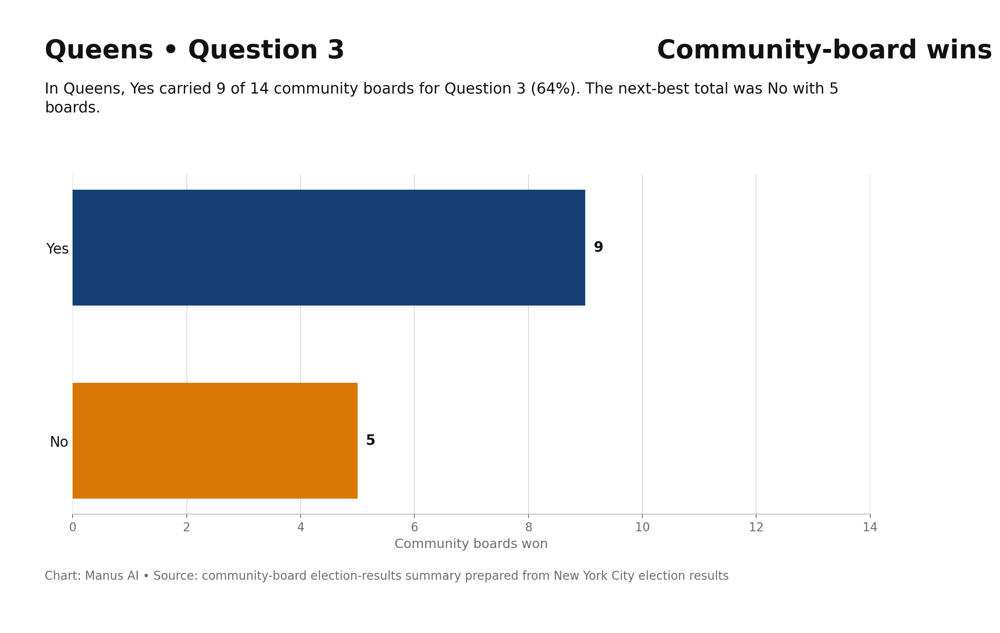
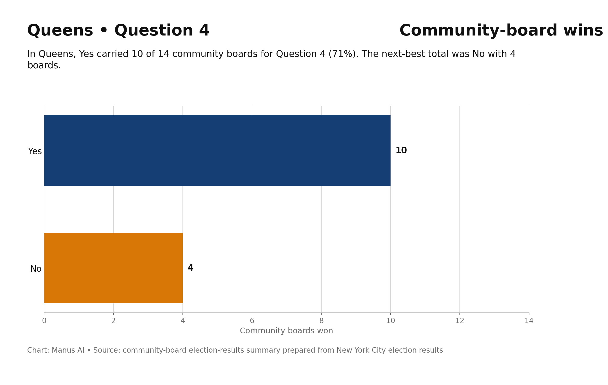
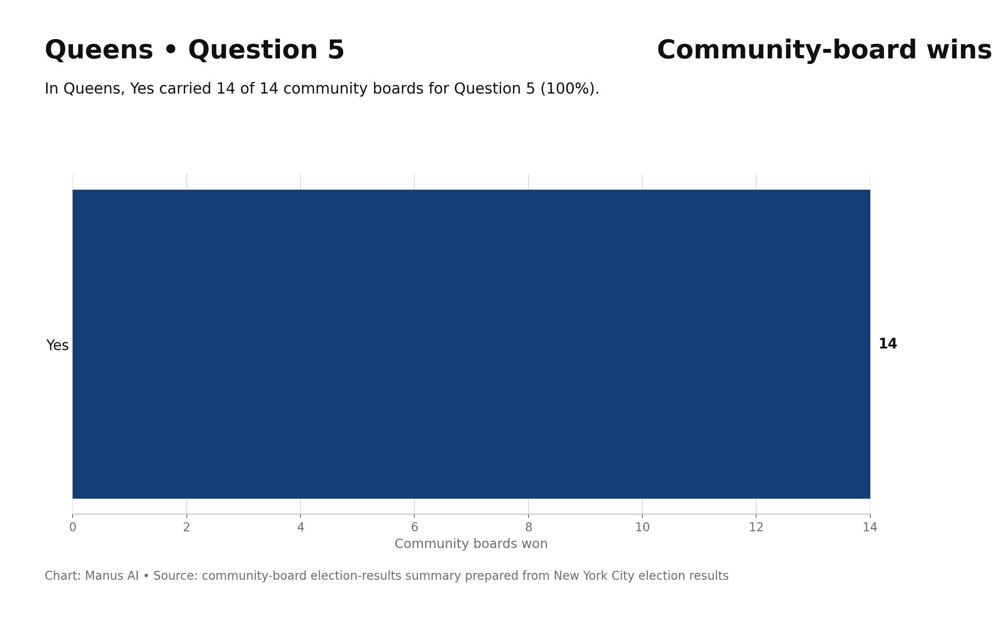
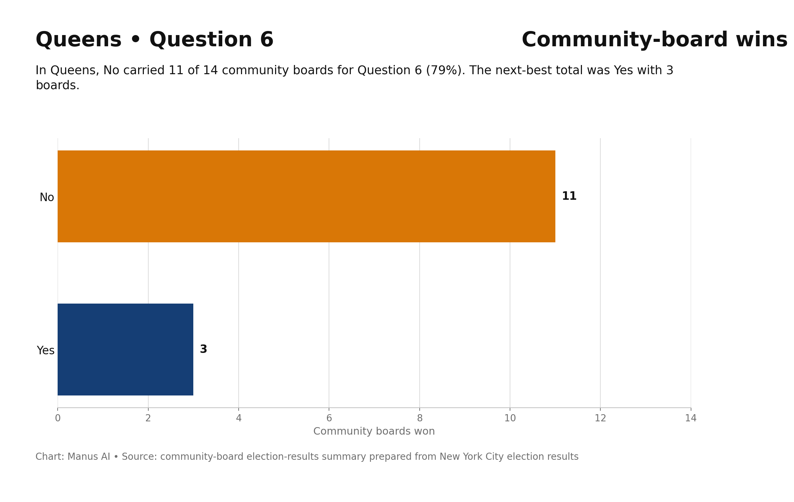

CB6 & Beyond
14 Community Boards · 14 Community Districts
This is the borough page for Queens.
Queens has 14 community boards. Buttons for each are below, and you can search your address above to find yours. Reach out anytime at Mike@bkcb6.org.
Queens is the most economically diverse borough in New York City, and the data reflects it. Kew Gardens and Woodhaven (QN9) had a median household income of $103,090 in 2023 — the highest of any Queens CB with full income data. South Ozone Park and Howard Beach (QN10) was at $92,520. Rego Park and Forest Hills (QN6) ranks 17th citywide for income. Queens Village (QN13) ranks 13th. Bayside and Little Neck (QN11) — though lacking full Furman income data — has long been among the higher-income districts in the outer boroughs.
On the other end: Rockaway and Broad Channel (QN14) ranks 46th citywide for income. Flushing and Whitestone (QN7) ranks 41st despite being one of the most commercially dense areas in the city. Jackson Heights (QN3) ranks 31st, Elmhurst and Corona (QN4) — with a median income of $73,470 and a 17.3% poverty rate — ranks in the middle but carries significant rent burden. Jamaica and Hollis (QN12) ranks 28th. The borough doesn't have the same concentration of extreme poverty as the Bronx or the same concentration of extreme wealth as Manhattan, but the spread is wide.
Kew Gardens and Woodhaven had a median gross rent of $1,930 in 2023, and 30.9% of renters were severely rent burdened — a high burden rate for a district at that income level. South Ozone Park was at $2,100 median rent. Elmhurst and Corona had a $1,960 median rent and a 31.1% severe rent burden rate against a median income of $73,470 — a household spending 30% of income on rent in a district where incomes skew lower is already strained. Queens rents have risen faster than wages in many districts, particularly in the western and central parts of the borough that saw increased demand from spillover from Brooklyn and Manhattan.
Astoria (QN1) ranks 12th most expensive in the city for rent while sitting at 23rd for income — a mismatch that drives displacement. Woodside and Sunnyside (QN2) ranks 18th for rent, 16th for income. These are not wealthy districts absorbing high rents. They're middle-income communities getting priced out.
Queens added housing across the income spectrum between 2010 and 2024, with income-targeted production concentrated in higher-need districts. In Elmhurst and Corona, 93% of new units in 4+ unit buildings were market rate — which in a district with a 17% poverty rate means most new production isn't reaching the households who need it most. South Ozone Park and Howard Beach saw 80% market rate production. The borough's production numbers have been significant, but the alignment between where units are built and who needs affordable housing remains imperfect.
Queens had the 2nd largest borough population in 2023 and the 2nd largest nonwhite share. It is the most linguistically diverse place on the planet by some measures, with dozens of languages spoken in some zip codes. That diversity is an asset and also a policy challenge — residents with limited English access, immigrant households without access to certain programs, and communities with different levels of institutional engagement all require differentiated approaches to outreach and services.








Queens is the most economically diverse borough in New York City, and the data reflects it. Kew Gardens and Woodhaven (QN9) had a median household income of $103,090 in 2023 — the highest of any Queens CB with full income data. South Ozone Park and Howard Beach (QN10) was at $92,520. Rego Park and Forest Hills (QN6) ranks 17th citywide for income. Queens Village (QN13) ranks 13th. Bayside and Little Neck (QN11) — though lacking full Furman income data — has long been among the higher-income districts in the outer boroughs.
On the other end: Rockaway and Broad Channel (QN14) ranks 46th citywide for income. Flushing and Whitestone (QN7) ranks 41st despite being one of the most commercially dense areas in the city. Jackson Heights (QN3) ranks 31st, Elmhurst and Corona (QN4) — with a median income of $73,470 and a 17.3% poverty rate — ranks in the middle but carries significant rent burden. Jamaica and Hollis (QN12) ranks 28th. The borough doesn't have the same concentration of extreme poverty as the Bronx or the same concentration of extreme wealth as Manhattan, but the spread is wide.
Kew Gardens and Woodhaven had a median gross rent of $1,930 in 2023, and 30.9% of renters were severely rent burdened — a high burden rate for a district at that income level. South Ozone Park was at $2,100 median rent. Elmhurst and Corona had a $1,960 median rent and a 31.1% severe rent burden rate against a median income of $73,470 — a household spending 30% of income on rent in a district where incomes skew lower is already strained. Queens rents have risen faster than wages in many districts, particularly in the western and central parts of the borough that saw increased demand from spillover from Brooklyn and Manhattan.
Astoria (QN1) ranks 12th most expensive in the city for rent while sitting at 23rd for income — a mismatch that drives displacement. Woodside and Sunnyside (QN2) ranks 18th for rent, 16th for income. These are not wealthy districts absorbing high rents. They're middle-income communities getting priced out.
Queens added housing across the income spectrum between 2010 and 2024, with income-targeted production concentrated in higher-need districts. In Elmhurst and Corona, 93% of new units in 4+ unit buildings were market rate — which in a district with a 17% poverty rate means most new production isn't reaching the households who need it most. South Ozone Park and Howard Beach saw 80% market rate production. The borough's production numbers have been significant, but the alignment between where units are built and who needs affordable housing remains imperfect.
Queens had the 2nd largest borough population in 2023 and the 2nd largest nonwhite share. It is the most linguistically diverse place on the planet by some measures, with dozens of languages spoken in some zip codes. That diversity is an asset and also a policy challenge — residents with limited English access, immigrant households without access to certain programs, and communities with different levels of institutional engagement all require differentiated approaches to outreach and services.